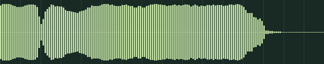

快门声 / 对焦声
整包下载 · ZIP如何导入相机
将 WAV 文件复制到 SD 卡的 PRIVATE/M4ROOT/GENERAL/SOUNDS/。在支持自定义声音的项目固件中，打开“拍摄 → 快门/静音”，选择“自定义快门声”或“自定义对焦声音”，再选择“从 SD 卡内导入”。两个声音槽都可以使用下列任意一段音频。
- Ciallo0.74 秒下载 WAV
- DAGOU0.49 秒下载 WAV
- JIAO0.49 秒下载 WAV
- WOCAO0.65 秒下载 WAV
- YEAH1.04 秒下载 WAV
- YYLX0.88 秒下载 WAV
- ZBS0.95 秒下载 WAV
- ZYJH0.95 秒下载 WAV
社区投稿
投稿整包 · ZIP提供者 linwenzhi7 · GitHub Issue #37
快门声（23）
- KM-10.28 秒下载 WAV
- KM-20.48 秒下载 WAV
- KM-30.44 秒下载 WAV
- KM-40.52 秒下载 WAV
- KM-50.20 秒下载 WAV
- KM-60.52 秒下载 WAV
- KM-70.56 秒下载 WAV
- KM-80.20 秒下载 WAV
- KM-90.24 秒下载 WAV
- KM-100.40 秒下载 WAV
- KM-110.40 秒下载 WAV
- KM-120.20 秒下载 WAV
- KM-131.20 秒下载 WAV
- KM-140.60 秒下载 WAV
- KM-150.44 秒下载 WAV
- KM-160.48 秒下载 WAV
- KM-170.44 秒下载 WAV
- KM-180.44 秒下载 WAV
- KM-190.60 秒下载 WAV
- KM-200.36 秒下载 WAV
- KM-210.56 秒下载 WAV
- KM-220.20 秒下载 WAV
- KM-231.08 秒下载 WAV